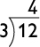

Type of Unit: Concept
Length of Unit: 15 days
Students should be able to:
Show fluency with all products through
Understand that the multiplier counts the number of groups, and the multiplicand counts the number of objects in a group.
Recognize equal-groups situations as multiplication situations.
This unit introduces students to division. Multiplication and division are inverse operations; if then
In a division situation, there is some total quantity that is to be distributed equally. There are two types of division situations:
Partitive, or sharing division, is division to find the number of objects in each group. In sharing situations, the number of groups is known and division is used to find the size of each group.
Quotitive, or grouping division, is division to find the number of groups. In measurement situations, the size of the groups is known and division is used to find the number of groups.
The Exploratory lesson sets the stage for introducing the operation of division. Students use an interactive to explore the factors of a number and the relationship between multiplication and division. Students move on in later lessons to focus first on partitive division, then quotitive division. Students are also introduced to division word problems, writing math stories, and using arrays and tape diagrams to represent division.
In this unit, you use only horizontal notation (e.g., ). Vertical notation is not an equation. It is a paper-and-pencil calculation method, well-suited to doing long division, but not necessary for developing conceptual understanding of the meaning of division. Therefore, we introduce vertical notation such as
in fourth grade when long division is introduced.
Lesson 1: A New Operation
Students chant with the animation to review the twos through fives. Students then use the Packing Blocks interactive to explore the relationship between multiplication and division. They intuitively approach the concept of division by thinking of a number as the product of two factors. They use the interactive to explore the possible factor pairs of a number. Students chant with the animation to review the twos.
Lesson 2: How Many for Each Person?
Students chant along with the multiplication animations to attain mastery of the threes. Then they solve a division problem that involves equal shares of countable objects. They prepare a presentation that includes a model of the problem, an equation, and an answer to the problem.
Lesson 3: How Long Will Each Piece Be?
Students chant along with the animation to attain mastery of the fours. They solve a division problem that involves equal shares of a measured length. They prepare a presentation that includes a model of the problem, an equation, and an answer to the problem.
Lesson 4: The Number of Equal Groups
Students chant along with the multiplication animations. They solve division problems that involve finding the number of equal groups. They prepare presentations that include a model of the problem, a division equation, a multiplication equation, and a complete answer to the problem.
Lesson 5: Number of Equal-Length Pieces
Students chant along with the multiplication animation for the eights. They solve division math stories that involve finding the number of equal-length pieces. They prepare a presentation that includes a model of the problem, a division equation, a multiplication equation, and an answer to the problem.
Lesson 6: How Many in Each?
Students chant along with the multiplication animation to review the sixes. They then compare using division to find equal shares with using division to find the number of equal groups.
Lesson 7: How Many in Each Row?
Students chant along with the multiplication animations to review the nines. Next, students consider how they can find the number of chairs in each row when they know the total number of chairs and the number of rows.
Lesson 8: How Many Rows?
Students chant along with the multiplication animations to review the eights. This lesson continues to develop the relationship between multiplication and division by asking students to consider how to find the number of rows in an array when they know the number of objects and the number of objects in each row.
Lesson 9: Multiplication and Division
Students chant along with the animation to review the sixes, sevens, eights, and nines. Students write equations and math stories to represent a situation.
Lesson 10: Related Equations
Students chant along with the animation to review the sixes, sevens, eights, and nines. Students write equations and math stories to represent a situation shown on a tape diagram. Students complete a Self Check.
Lesson 11: Putting It Together
Students first review their work on the Self Check problem. Then they work with a partner to write equations, draw arrays or tape diagrams, and write math stories to match a situation. Finally, they revise their work on the Self Check.
Lessons 12–14: Gallery
Students who have a clear understanding of the content thus far in the unit will work on Gallery problems of their choosing.
Lesson 15: Unit Assessment
The final assessment is computer scored items and performance tasks.
This unit focuses on the following Common Core State Standards for Mathematics:
3.OA—Operations and Algebraic ThinkingRepresent and solve problems involving multiplication and division.
2. Interpret whole-number quotients of whole numbers, e.g., interpret as the number of objects in each share when 56 objects are partitioned equally into 8 shares, or as a number of shares when 56 objects are partitioned into equal shares of 8 objects each. For example, describe a context in which a number of shares or a number of groups can be expressed as .
3. Use multiplication and division within 100 to solve word problems in situations involving equal groups, arrays, and measurement quantities, e. g., by using drawings and equations with a symbol for the unknown number to represent the problem.
4. Determine the unknown whole number in a multiplication or division equation relating three whole numbers. For example, determine the unknown number that makes the equation true in each of the equations
Understand properties of multiplication and the relationship between multiplication and division.
Multiply and divide within 100.
7. Fluently multiply and divide within 100, using strategies such as the relationship between multiplication and division (e.g., knowing that one knows or properties of operations. By the end of Grade 3, know from memory all products of two one-digit numbers.
1. Make sense of problems and persevere in solving them.
2. Reason abstractly and quantitatively.
3. Construct viable arguments and critique the reasoning of others.
4. Model with mathematics.
5. Use appropriate tools strategically.
6. Attend to precision.
7. Look for and make use of structure.
8. Look for and express regularity in repeated reasoning.
SOURCE: Common Core State Standards Initiative. 2010. “Common Core State Standards for Mathematics”: 22–23. http://www.corestandards.org/assets/CCSSI_Math_%20Standards.pdf (Accessed January 1, 2013)
Students, on their way to conceptual understanding and mastery, move through a sequence of learning, from concrete to representational to abstract understanding. Some learners move through the sequence rather quickly, while others, particularly students with disabilities, require explicit modeling, abundant time and experiences, and repeated practice within each stage before they can construct understanding within the later stage. This sequence of learning leads to deep conceptual understanding rather than memorization of a rote set of procedures.
The concrete stage is the most basic level of understanding and the most vital in the learners' ability to construct meaning. At the concrete stage, learners work with discrete manipulatives, like counters, cubes, and objects that can be put into groups and counted. Students with disabilities require modeling, explicit instruction, guided practice, and then abundant independent experiences to fully understand the concept. Toward the end of plentiful work in the concrete stage, students will move toward the next stage in the framework, connecting the concrete to the representational.
The representational stage begins when students are able to solve problems by representing concrete objects in drawings. Encourage students not to draw the actual objects, but to use a representation that can stand in the place of the discrete objects. Tally marks, circles, and cubes are among the most used representations. Other tools like open number lines are often used during this stage, too. Once a student can solve a problem by using a drawing to represent the context of the problem, they are guided toward the abstract.
In the abstract stage, students use numbers and math symbols to solve problems. Being able to set up and solve problems such as equations requires a pencil and paper or mental computation. This stage is the most advanced and often requires prior concrete and representational understanding before it is mastered by students with disabilities.
If a student is struggling in math, knowing this framework and a student's position within the stages can help you prescribe instruction. If a student is not yet to the abstract stage, see if they can draw pictures to represent the context, if not move back to the concrete stage. Provide more work in the concrete stage while also linking the concrete to the representational. First have the student work out the problem with objects and then model drawing a representation of the context. Once students have had many opportunities to master the representational stage of learning, they can be guided to write the equation with their representation. Working toward abstract learning is the goal, but often takes longer for some students.
Displaying math artifacts prominently in the classroom documents and makes the learning visible and greatly supports all learners. The anchors of learning can be used by students as a visual reference for subsequent lessons and encourages the movement toward the use of more efficient strategies.
Embedding correct mathematical vocabulary throughout the unit will give students exposure to the terms in context. Terms for this unit include equation, expression, array, row, column, area, factor, product, dividend, divisor, and quotient. In addition to using the terms in context, consider providing a visual glossary or prominently displayed word wall that illustrates each of the terms to be used as a visual reference for students. Be thoughtful and correct with your use of terms like equation and expression because they differ in definition.
In addition, encourage students to use mathematical vocabulary in context, which supports the visual image of the problem. For example, encourage students to say, “eight groups of six is forty-eight,” rather than “eight times six is forty-eight.” Providing the term that allows for visualization better assists students to create a mental picture of the context.
Anchor charts are visual references used to capture math learning and strategies, which can be prominently displayed in the classroom and referenced by students in subsequent lessons. Anchor charts can be created during the Ways of Thinking discussion and should capture the essence of the students' learning. Many times the charts are created from least efficient to most efficient strategies and placed next to one another intentionally so connections and relationships can be discussed. Anchor charts are often used by students with disabilities and struggling mathematicians until the math learning transfers into long term memory.
To begin each lesson, students chant along with a skip-counting animation to ensure that all students are meeting the expectations of knowing from memory all products of two one-digit numbers. Some students with disabilities may struggle with memorizing their facts. Support them with a visual model of a highlighted hundreds skip-counting chart so that they can successfully chant along. Providing support for auditory and visual practice assists students in working toward automaticity.
There are positive achievement results when students are active and contributing participants in their math classrooms. Employing interactive response strategies has a positive effect on whether students view themselves as confident math learners and on their mastery of math content.
After asking a question, students must have sufficient time to process the question, think about their response, and reply. Research suggests that when there are three seconds between asking and answering the question there are many instructional benefits: the number of students who volunteer to respond to the question increases; the correctness of the answer increases; and the length of the reply is longer; the depth of understanding is greater; there are fewer students who say, “I don't know.” Wait time for all students is needed, but for students who process auditory information more slowly, it can be the critical element that stands between frustration and success.
Active learning occurs when responsive strategies, like Turn and Talk, are integrated into the classroom. The teacher can pose a question, give appropriate wait time, and then ask students to Turn and Talk to their shoulder partner about their response. Prompting active engagement, this much-needed opportunity encourages every student to engage in answering the teacher's question, allows for articulation practice, and builds a sense in students of being an active and contributing member of their math learning community. Turn and Talk also provides the teacher with the chance to listen in on several pair responses rather than just hearing one student's response, which is typical during a whole group session. Consider setting up Turn and Talk rituals and routines early in the year and using the engagement strategy to keep all students actively engaged during mathematics.
The positive effects of using white response boards in the classroom include increased participation, greater accuracy in students' answers, immediate teacher feedback, and decreased lack of attention and misbehavior. The teacher poses a question and gives adequate wait time. Each student uses a dry erase marker to respond on their board, and then when requested by the teacher, students hold their boards up en masse. The teacher easily scans the responses to formatively assess students' understanding. In some instances, the teacher then presents the answer. In other circumstances, the teacher easily collects a few boards to share varied student responses, particularly if the problem prompted multiple solution strategies. This beneficial interactive response strategy often allows time for the teacher to confer with a struggling mathematician and help them solve while the other students are working. For best results, rituals and routines must be established.
As you give directions for work that is to be completed during Work Time, ask students with disabilities to rephrase the instructions or ask them if they have clarifying questions. Restating the directions and offering a board configuration that can be used as a reference during the Work Time assists students in becoming independent learners.
Consider using a board configuration that has the unit of study, day's lesson, page numbers, essential question, must-do problem to be discussed in Ways of Thinking, and extension assignment. Outlining the lesson for students gives them a visual reference to guide them in Work Time.
Struggling mathematicians often don't complete as many problems during Work Time as students that are more fluent and have a better conceptual understanding. Completing all the problems is not necessary and can contribute to holding back a class that is ready, as a whole, to move forward. To meet all learners' needs, consider offering a Must-Do Problem. The Must-Do Problem will be the first problem that is discussed during Ways of Thinking. Therefore, all students have completed and can be ready to discuss and learn from this preselected, purposely chosen problem.
Daily, the teacher is gathering formative data to prescribe whole group, small group, and individualized instruction to meet students' needs. The Workshop format of Opening, Work Time, and Ways of Thinking with Reflection offers the necessary structure for a variety of ways to meet learners' needs. Placing students into a variety of groupings during Work Time is a valuable teaching tool that maximizes learning for all students. Within the structure of a unit, students have the opportunity to work collegially in pairs, within collaborative groups, in a teacher-led small group, or independently. The varied groupings are assigned purposefully and prescriptively based on the assigned task and to meet the needs of learners. The teacher is actively involved with the learning process and facilitates instruction to accelerate learning. Whether working in pairs, collaboratively, or independently, the students can expect that the teacher will drop in on conversation and confer with the students.
Intentional partnering based on the teacher's knowledge of the students' strength and weaknesses is an essential element in strategically selecting partner pairs. A partnership can lead to active and engaged learning, articulation about math reasoning, and growth of students' confidence as a mathematician. However, poor partner pairing can deter learning too. When thoughtfully and intentionally pairing students, particularly those with disabilities, carefully consider choosing a partner that will assist in a student's learning through mutual and respectful dialogue as they work toward joint solutions. The social interaction garnered from the collegial partnerships is advantageous to all students and can lead to the next horizon of learning.
To reinforce learning, collaborative groupings are also advantageous. When students work in groups of three or four, they must form and share their opinions, articulate their math reasoning, and justify their solutions. Working collaboratively also promotes viewing and analyzing other students' work, and using math talk to make connections between strategies. Like creating intentional partnerships, considerable thought should be given to students in each collaborative grouping. With intent and explicit instruction, students are taught about the rituals and routines associated with working in the collaborative group and the expectation is set that each member will be an active, respected, and contributing member. When the benefits are met, math learning is deepened.
Small group instruction creates the scaffolding to move a learner's mathematical thinking to the next level. All students should have some opportunity to participate in small group settings; however struggling mathematicians, particularly those with disabilities, will need more small group support than others to attain mastery of grade level standards.
Small group work, within Work Time, should be planned and deliberate to support learners' needs. This can be achieved almost daily. The teacher, under most circumstances, works with the small group to guide their learning on the daily Work Time assignment. If needed, the content may remain the same, but numbers can be altered to make the problems more familiar and easier to solve.
Having a purposeful system in place for creating small groups of students is vital for smooth transition from Opening to Work Time. Consider a board configuration that highlights students' names for small group instruction so they can transition quickly to the work area. The ritual and routine should be in place so that students immediately begin the task as soon as they get to the small group area. Avoid having students depend on the teacher to get them started.
By design, the teacher begins Work Time by quickly circulating around the room, and checking in on partners, collaborative groups, and/or independent workers. This assures a check that students have effectively started the assigned task and the learners will have the opportunity to ask clarifying questions. These few minutes will set the stage for uninterrupted time with the small group.
After completing this check, the teacher will return to the small group. The teacher, based on the students' work deliberatively decides whether students work independently under her direct supervision, or whether it is more beneficial for the small group to continue toward a solution together. This decision varies according to the task.
Easily accessible from the small group area are concrete models and math tools, including but not limited to small cubes, counters, hundreds charts, number lines, grid paper, and a white board. Often, the teacher reads the problem and provides the concrete model for students to manipulate. Through guidance and probing questions the students work toward a solution and record their answer. In recording, the teacher will assist in moving the students' thinking forward by asking them to record in the most efficient way based on their level of conceptual understanding. The progression moves from concrete, to representational, to abstract.
The teacher stays with the small group for a portion of the Work Time, perhaps 10 or 15 minutes, and then leaves the small group to support other students' learning. The teacher uses the remainder of time to collect student work, confer with students, and formulate a purposeful and focused Ways of Thinking session.
Another time that it may be appropriate to pull a small group is during the Summary of the Math or the Reflection routines. Students with disabilities may have difficulty articulating their learning through written response. Guide a small group toward formulating their summary of learning together and prescribe a shared reflection. The shared reflection can be written by the student in their math journal or can be typed and printed on a label to be placed or glued in their journal.
There are days when students work independently. It's important to explicitly teach students about your expectations during independent work. Advise them on when they must solely work alone, and when it's acceptable to hold accountable math talk, ask a peer a question, or inquire for clarification. Though students are working independently under certain preset circumstances, there may still be a math hum in the room. Learning during this time may be optimized when students are taught acceptable conversation and interaction techniques.
Within Work Time, teachers facilitate students' mathematical learning by asking questions, having students articulate their thinking, guiding students toward making connections, and helping to clear up misconceptions. For about half of the Work Time, when the teacher is not with the small group, the teacher is conferring with individuals or pairs of students. At this time, the teacher is also strategically selecting student work, ideas, and strategies that will be highlighted in Ways of Thinking. Struggling mathematicians benefit from analyzing their work and articulating their reasoning. Conferring will help guide them to construct meaning and make connections.
Student work should be strategically and purposefully selected by the teacher during Work Time. Consider sharing student strategies in an order that will build toward the most efficient strategy. For struggling mathematicians, sharing a concrete model can not only be important, but also linking that concrete model to a visual and then representational model can move them toward their next math horizon. Ultimately, you want the student to be able to master the abstract, so the conversation that occurs about the relationship between strategies during this Ways of Thinking time is imperative for students with disabilities. When possible, using student work of the struggling learner when it aligns with the teaching point can be a powerful motivator and can build a student's self-confidence as a mathematician.
The goal is for each student to be able to independently reflect and craft a written response for the day's learning. Students with disabilities may have difficulty reflecting and summarizing their learning in a written response. Therefore, consider providing scaffolding until they are able to achieve the task independently.
Options may include, but are not limited to:
Pull a small group. The teacher can model thinking aloud and writing a written response that would be appropriate for the students' journals.
Pull a small group. Consider having the students articulate their learning as a group. Articulating their thoughts provides them with the opportunity to clarify their thinking and allows the teacher to gauge their level of understanding. The teacher also has the opportunity to clear up misconceptions that may be lingering. The teacher can write a group reflection that can be written in a student's journal, or can type the response on a label to be placed in students' journals.
Purposely pair students so they can discuss their reflection and then craft a written response together.
Create an Exit Ticket that would assess the student's level of understanding based on the day's math focus.
Students, particularly struggling mathematicians, benefit from teacher and peer modeling. Think about strategically sharing a student's reflection either at the end of the Math Workshop or the next day in Opening as a quick reminder of yesterday's work. This model can be a great learning tool for students as they move toward mastery of written reflections.